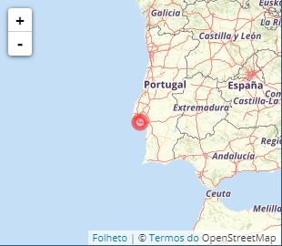
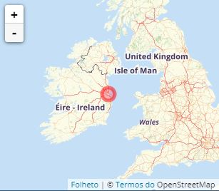
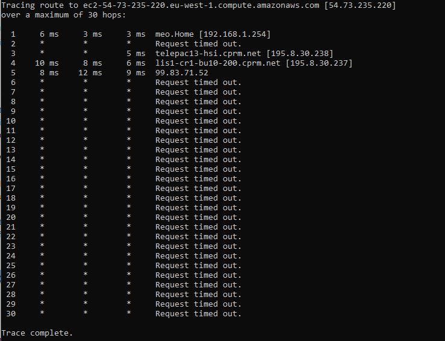
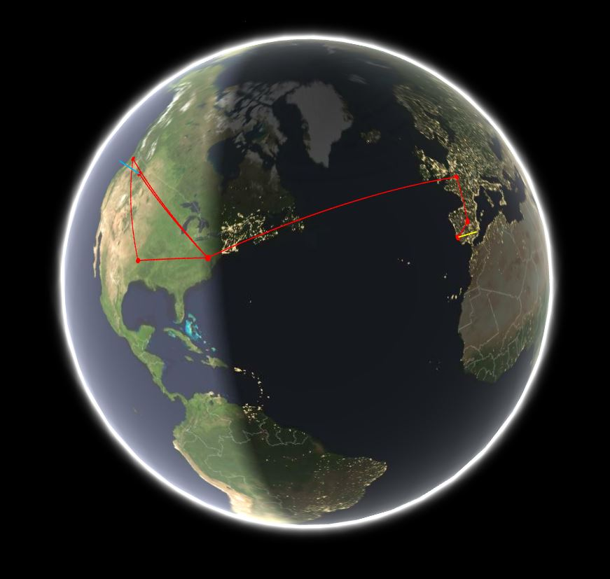
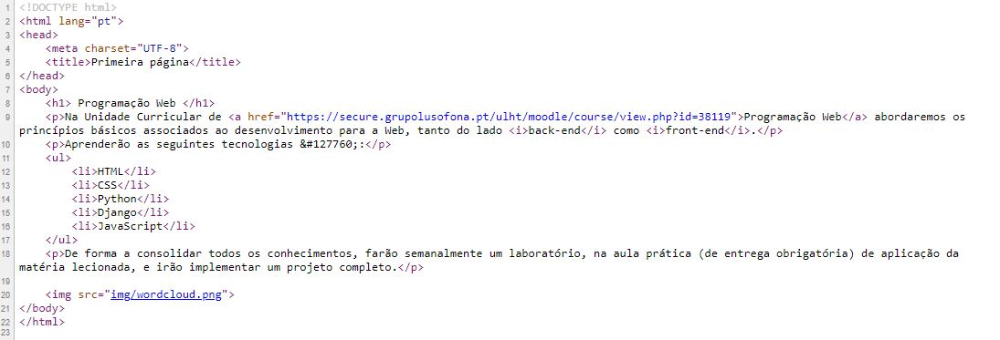
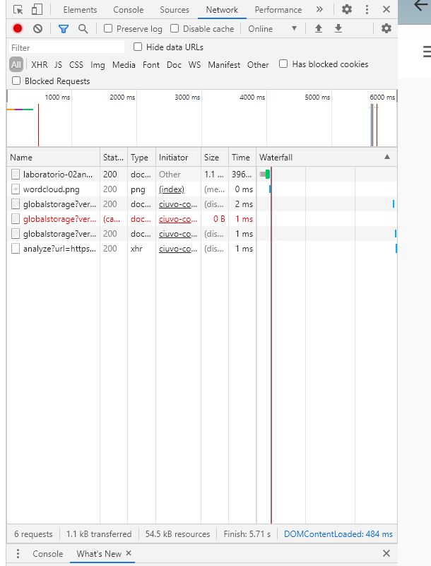

Ano Letivo: 2020/2021
Trabalho realizado: Marisa Santos a21903611
Docente: Rui Santos
Neste primeiro laboratório o objetivo é a criação de uma página Web e disponibilizar essa mesma página num servidor nuvem, neste caso na plataforma Heroku.
Com a obtenção da informação do número do IP do computador foi possível saber a localização exata de onde se localiza, neste caso o mapa mostra-nos mais concretamente onde.
O mesmo processo foi realizado para a obtenção da localização do IP que corresponde ao servidor Heroku, o mapa da localização exata mostra mais concretamente onde.
Através da linha de comandos é possível rastrear a rota que os pacotes de IP fazem, representados na imagem a seguir:
Através da ferramenta GeoTraceroute é possível ver essa mesma rota mas neste caso num mapa geográfico do mundo.
Esta rota passa em quatro países e em nove cidades espalhadas pelo o mundo sendo estas:
Apresentadas de forma sequencial correspondente à sua rota.
Para visualizar o código recebido, bastou clicar no botão direito do rato e selecionar "ver código fonte" desta forma foi possível verificar que o código recebido estava corretamente escrito.
Para inspeccionar ficheiros descarregados pelo browser, basta clicar, como já anteriormente feito, no botão direito do rato e selecionar "inspeccionar", assim é possível analisar uma grande variedade de informação.
De seguida seleciona-se a barra network, aqui irá aparecer os vários ficheiros que pertencem à "página".
Com a realização deste laboratório foi possível conhecer e analisar aspetos ligados com a internet e com o protocolo HTTP, fazendo com que fosse possível nós mesmos criarmos a nosssa página Web.
Na minha opinião, considero que a realização de laboratórios acaba por ser bastante enriquecedora pois permite que consigamos compreender e pesquisar mais por nós próprios, conseguindo resolver os trabalhos que nos são propostos e consequentemente problemas que vão surgindo por nós próprios.